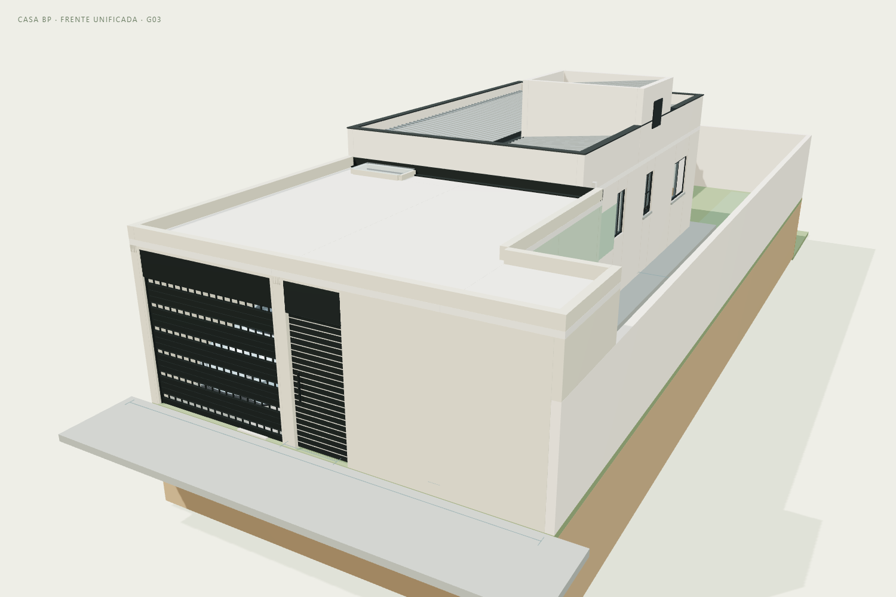
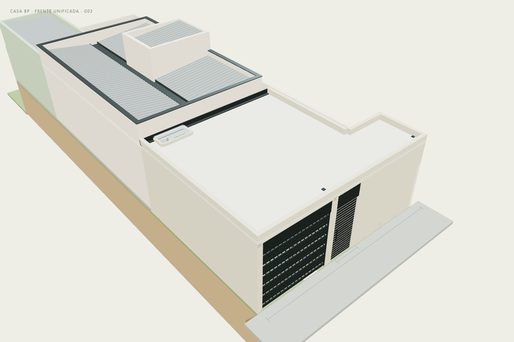
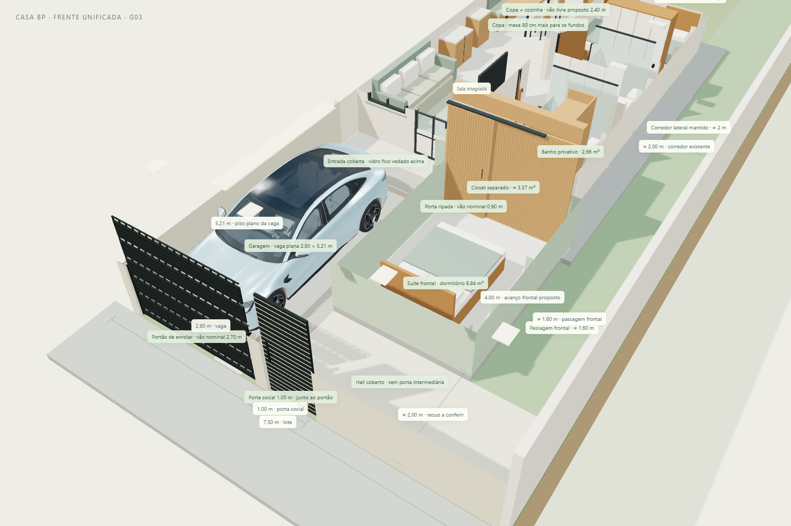

CASA BP · G03 · 11/11/2026
A laje da garagem agora chega à cobertura da entrada existente, fechando a antiga faixa descoberta. Um hall coberto une a porta social, a garagem e o corredor lateral. A porta social passa a ficar junto ao portão do carro, com a mesma altura e acabamento. As duas portas intermediárias foram retiradas do estudo: entra-se pela porta social e depois pela porta da casa.
Abrir modelo · Entrar no tour · Baixar GLB atualizado

O conjunto frontal é representado com laje na mesma cota da cobertura da entrada: face inferior +2,70 m, superior +2,80 m e platibanda até +3,02 m. A laje abrange a garagem, a ampliação do quarto e o hall frontal. O corredor lateral depois do hall permanece descoberto, preservando a janela lateral do quarto.
A antiga faixa a céu aberto diante da sala foi fechada. Na cobertura foi incluído um vidro fixo elevado, com ressaltos e arremates ilustrativos: ele permite passagem de luz, sem abertura direta à chuva. Isso representa uma intenção de vedação, não comprova estanqueidade. Apoios, juntas, rufos, caimentos, impermeabilização e destino da água pluvial precisam de detalhamento.
A janela da sala, agora voltada para a garagem coberta, é tratada como vidro fixo vedado no estudo. A ventilação e a iluminação reais da sala precisam ser revistas em conjunto com a copa e a cozinha. As grelhas no portão e a abertura para o corredor não constituem cálculo de ventilação. Referência PNNL sobre separação e ventilação entre garagem e casa, utilizada como princípio técnico, sem importar exigências normativas estrangeiras. Não se considera o render uma medição de luz ou qualidade do ar.

| Elemento | Dimensão nominal |
|---|---|
| Portão do carro | 2,70 × 2,30 m |
| Porta social junto ao portão | 1,00 × 2,30 m |
| Vaga plana até o degrau | 2,80 × 5,21 m · 14,588 m² |
| Faixa coberta até a casa, incluindo acesso elevado | 2,80 × 5,86 m · 16,408 m² |
| Corredor lateral junto à ampliação | 1,60 m |
| Corredor lateral junto à casa existente | 2,00 m |
| Desnível antes da varanda | 14 cm |
| Projeções novas, incluindo quarto, fundos e frente | 52,378 m² · não é área legal aprovada |
O hall permite seguir da porta social ao corredor lateral sem outra porta. Para chegar à porta da sala, segue-se pela garagem e pela entrada agora coberta. A passagem junto ao carro continua compacta; não se criou um corredor independente de 0,90 m ao lado do veículo nem uma rota acessível.
O Seal mantém o tamanho real nominal da versão representada. A posição foi centralizada na parte plana da vaga: aproximadamente 20,5 cm entre carro e fechamento frontal e 20,5 cm até o degrau. Junto ao espelho direito restam cerca de 52,5 cm. Essas folgas são geométricas, com portas e porta-malas fechados; não comprovam manobra nem abertura das portas. A área elevada de acesso não foi somada ao comprimento plano da vaga para sugerir uma garagem maior.

O botão “Entrar na casa” inicia um percurso a pé, com olhos a 1,60 m acima do piso. A visita entra pela porta social, passa pela garagem, sala, circulação, closet, quarto da frente, banheiro social, quarto dos fundos, copa, cozinha, lavanderia, quintal e corredor lateral, voltando ao hall. As portas necessárias são abertas durante a visita e restauradas ao sair.
O trajeto é calculado sobre as áreas caminháveis, desviando das paredes, esquadrias, móveis e do carro. Usa um corpo simplificado com 0,40 m de largura e uma grade de 7 cm; isso ajuda a visualizar o espaço, mas não valida acessibilidade, ergonomia ou normas. A visita conserva paredes completas e cobertura, sem atravessá-las para obter os enquadramentos.
No computador: WASD ou setas para andar; arraste a imagem para olhar; Esc encerra a visita. No celular: setas na tela e arraste a imagem. “Pausar e explorar” permite caminhar livremente; “Continuar tour” recalcula o caminho desde a posição atual.
A casa atual, as alternativas A–D, a proposta anterior e os arquivos históricos da garagem continuam separados. Quarto ampliado, closet, copa, cozinha, lavanderia e arrimo não foram redimensionados nesta revisão. A laje e os apoios representam volumes arquitetônicos: não dimensionam estrutura, fundações, ligação à casa ou muros, nem autorizam uso sobre a cobertura. Conferir recuos, legislação local, níveis, drenagem e ventilação antes da obra.
Carro “2024 BYD Seal”, de Ddiaz Design, adaptado sob CC BY-NC-SA 4.0; a malha não é CAD certificado. O carro permanece apenas como referência dentro da garagem na interface principal.